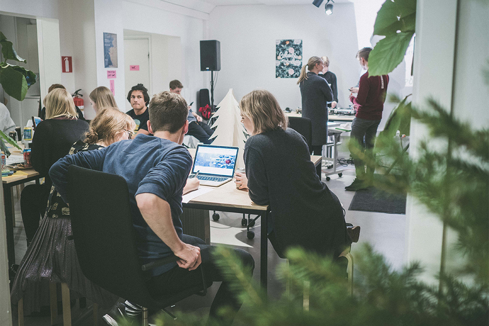

Meistä
Käyttäjän ystävät ry on perustettu vuonna 2001 Käyttettävyyskoulun opiskelijoiden opiskelijayhdistykseksi. Yhdistys kokoaa yhteen käytettävyydestä, UI- ja UX-suunnittelusta sekä palvelumuotoilusta kiinnostuneita ihmisiä.
Käyttäjän ystävät järjestää erilaisia avoimia tapahtumia alan opiskelijoille ja nuorille ammattilaisille. Suosituimpia ovat ekskursiot eli yritysvierailut alan yrityksiin. Vierailuilla tutustutaan palvelumuotoiluun, käyttöliittymäsuunnitteluun ja käyttäjätutkimuksiin ja ne ovat loistava tilaisuus kuulla alasta sen ammattilaisilta ja verkostoitua.
Suurin osa jäsenistämme on Helsingin yliopiston, Aalto-yliopiston tai Metropolia Ammattikorkeakoulun opiskelijoita tai jo valmistuneita, mutta kaikki alasta kiinnostuneet ovat tervetulleita jäseneksemme.